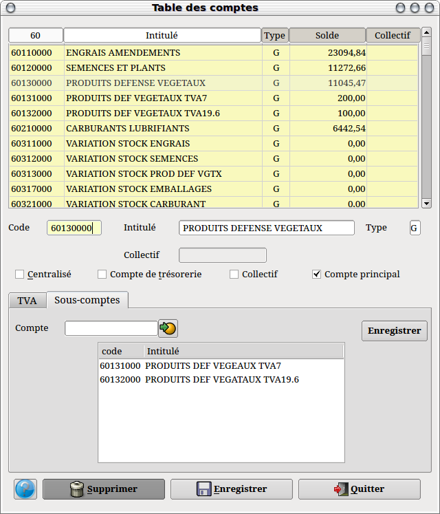
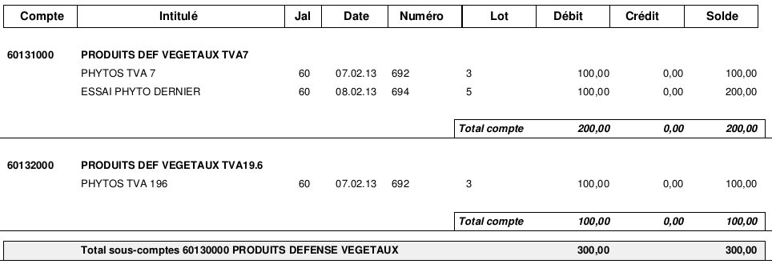

~ Comptabilité Laurux ~

~ Comptabilité Laurux ~ |
|
|
|

Note : Un clic sur le bouton " Enregistrer " enregistre le compte dans la base et remet tous les champs à blanc.
Dans la partie haute de l’écran vous avez les comptes déjà cré. En cliquant sur un de ceux-ci vous aurez le détail dans la partie inférieure. Positionnez-vous dans le champ que vous souhaitez changer et saisissez vos modifications.
Le Code est sur 8 caractères maxi, l’Intitulé sur 25 et le Type sur 1 (G ou B).
La zone " Collectif " (Mouvementée si vous appelez un compte client ou fournisseur) et le bouton " Compte collectif " (Mouvementé si vous appelez un compte collectif) ne sont pas sensitifs.
Cochez le bouton " Centralisé " si vous ne souhaitez pas conserver le détail des écritures.
Cochez le bouton " Compte de trésorerie " s’il s’agit d’un compte de cette nature.
La zone " Tva sur ventes " sert, dans le cas d’un compte de vente, à générer le calcul de la Tva lors de la saisie des écritures de ventes dans la mesure ou le bouton " Génération automatique " est coché.
La zone " Tva sur achats " sert, dans le cas d’un compte d’achat, à générer le calcul de la Tva lors de la saisie des écritures d’achats dans la mesure ou le bouton " Génération automatique " est coché.
Note sur la gestion des sous-comptes.
Laurux offre la possibilité de faire les totaux des sous-comptes en impression du grand livre.
Pour activer cette possibilité il faudra en premier créer ce qu'on va
appeler un compte principal (Voir la copie d'écran ci-dessus). Il
suffit pour cela de cocher le bouton " Compte principal ". Si ce bouton est activé alors on aura un deuxième onglet qui permettra la saisie des sous-comptes.

Dès lors, il ne sera plus possible de saisir d'écritures sur le compte principal et l'impression du grand livre totalisera l'ensemble des sous-comptes comme le montre l'exemple ci-dessous.

Rappel : Les comptes clients (Type C) se créent par la table des clients, les comptes fournisseurs (Type F) par la table fournisseurs, et les comptes de Gestion (Type G) et Bilan (Type B) par la table des comptes. Les comptes collectifs quant à eux se créent par la table des comptes collectifs.
N’oubliez pas d’enregistrer votre travail avant de quitter le programme.
----------------------------------------------------------------------------------------------------------------------